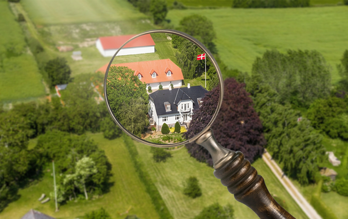

Trin 2: Boligjagten
Nu ved Bo, hvad han har at gøre godt med, og boligjagten går i gang.
Nogle skaller ser perfekte ud ved første øjekast. Andre gør ikke. Bo mærker hurtigt begejstringen komme snigende – “det er jo perfekt!” – men stopper sig selv igen.
For det første indtryk holder ikke altid.
Denne gang kigger han ordentligt efter. Ikke bare på overfladen, men på det, der faktisk betyder noget: beliggenhed, stand og følelsen, når han bevæger sig i skallen.
Han ser flere skaller og begynder at sammenligne. Langsomt går det op for ham, at det ikke handler om at finde den perfekte skal, men om at finde den, der føles rigtig på længere sigt.